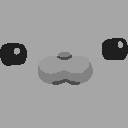

Right, not much to say here. Kratzen is going on the backburner, there’s a list of all the games I won’t be reviewing, a short explanation about why I won’t be writing for Kratzen, and an expectation for a real farewell article. ☞
Quick update from slow Froge

I was going to review a game I spent the past week on, but I’ve found that games are like casual sex in that the longer you spend time on it the more your brain resents it. So I’m ditching that idea and doing another one. You’re welcome.

In Autonauts you play as Autonauts to save Autonauts. That sounds like a joke, but it’s pretty much the entire game. It’s also repetitive and tedious and more to the point not very fun, so you can automatically skip it. ☞
No one who speaks German could be an evil man
Yesterday’s game was like LISA but worse. Yesterday’s review was like my multi-part LISA review, but shorter. Whether being 11,500 words longer implies being 11,500 words better is a mystery that can only be solved by sciencemen.
This game is the darkest and most hardcore RPG to grace this website since the 2005 masterpiece “Shad ‘Ow, the Edge’ Hog”. Unfortunately it’s not that good, and unlike Shad Hog, could have standed to be a lot better. ☞
THEY’RE TURNING THE FREAKING FROGS GAY
Chiguisi is a polyamorous frog who has detailed moments of her life with the Poly Wags webcomic. It’s because of her that I’m more aware of polyamorous culture than before. It’s a bit fluffy at times, but there are moments of idle happiness here.
Floret Bond is a gay visual novel that features nothing gay at all. What to heck? But this minor setback does not distract from the overall well – told story, as minor as it is, and you might find some enjoyment in it. ☞
It’s time for a fresh start. I have done many things over the past year, all of which I regret. But this will be the most regrettable, and for those of you who expected good times, prepare to be as disappointed as you already are. ☞